Ausgabe vom 27. August 2026
Alle Meldungen
Netz & Technik
Tarife & Angebote
 Nufibre startet eSIM-Unlimited für 15 Pfund
Nufibre startet eSIM-Unlimited für 15 Pfund
 Vodafone startet Danke-Deal: Mobilfunk zum halben Preis
Vodafone startet Danke-Deal: Mobilfunk zum halben Preis
Satellit & Direct-to-Cell
Regulierung & Politik
Geld & Übernahmen
 Iliad wächst und übernimmt Teile von SFR
Iliad wächst und übernimmt Teile von SFR
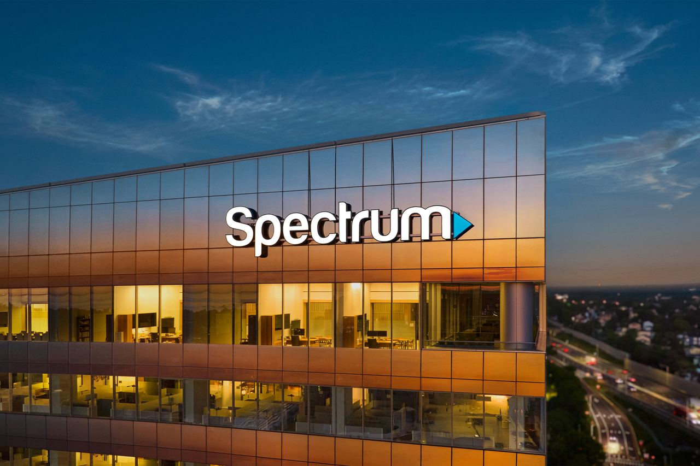
Charter schließt Doppelübernahme von Cox und LibertyPartnerschaften
 Vodafone Idea und BSNL teilen Netzinfrastruktur enger
Vodafone Idea und BSNL teilen Netzinfrastruktur enger
Vermischtes
 iPhone 17 wird weltweit meistverkauftes Smartphone
iPhone 17 wird weltweit meistverkauftes Smartphone
Netz & Technik
86 Meldungen
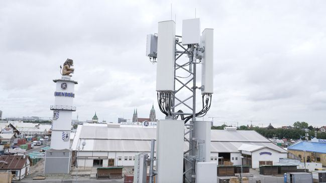
Telefónica errichtet eigenes Netz fürs OktoberfestAuch berichtet von O2 Telefónica Deutschland
 Private Mobilfunknetze in Brasilien wachsen um 20 Prozent
Private Mobilfunknetze in Brasilien wachsen um 20 Prozent
Auch berichtet von Mobile World Live
Auch berichtet von Infobip
Auch berichtet von Fierce Network
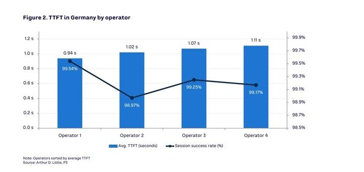
KI-Erfahrung wird neue Netzkennzahl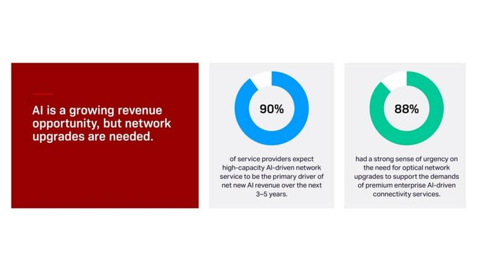
KI zwingt Betreiber zu schnellem Glasfasernetz-Ausbau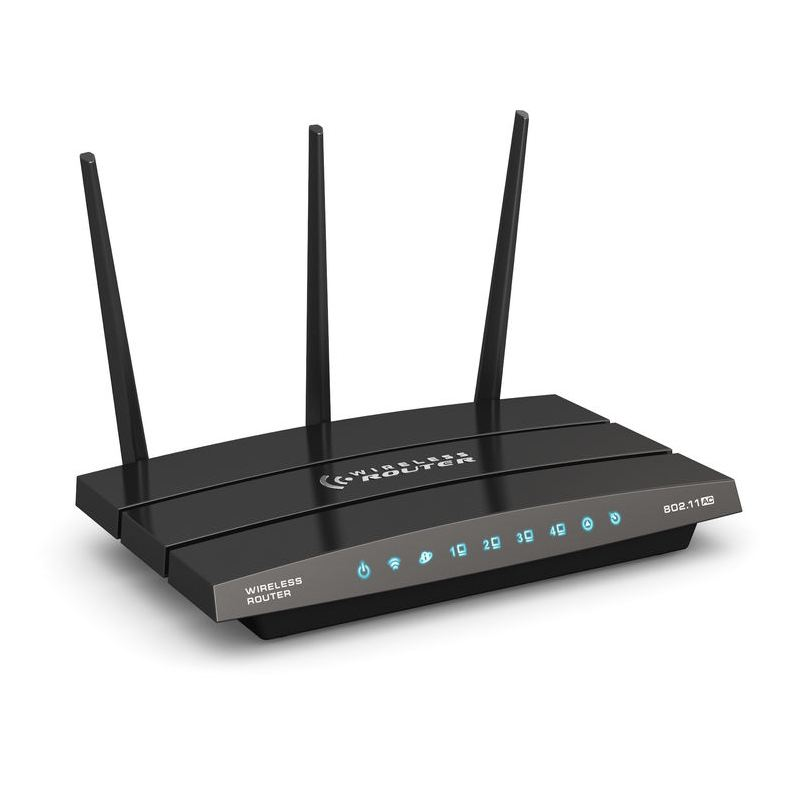
Studie: 36 Prozent kämpfen mit schlechtem Heim-WLANAuch berichtet von Bitkom
 MTN verlagert Mobile-Money-Plattform in die Cloud
MTN verlagert Mobile-Money-Plattform in die Cloud
Auch berichtet von Mobile Europe, Developing Telecoms
Auch berichtet von Developing Telecoms
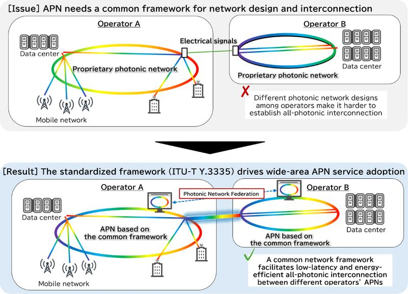
ITU-T standardisiert latenzarme Netze für KI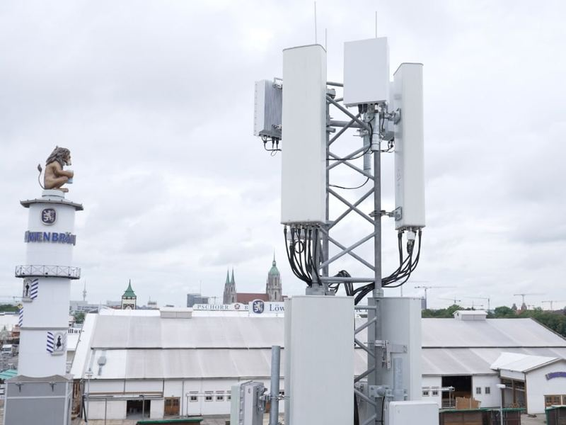
o2 baut 21 zusätzliche Mobilfunkstandorte fürs Oktoberfest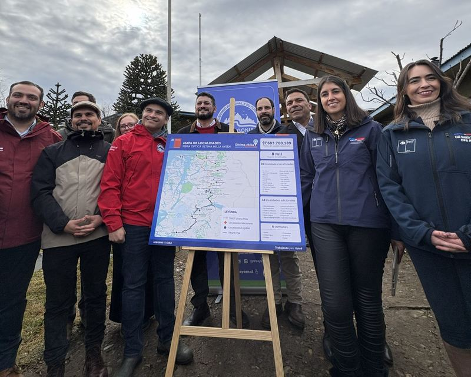
Chile fördert Glasfaser für 33 ländliche Orte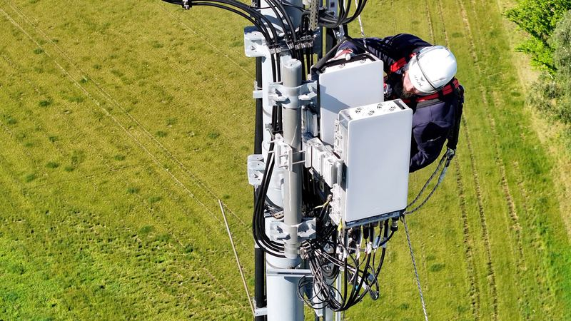
O2 bringt 5G nach KönigsbergAuch berichtet von O2 Telefónica Deutschland
 Chorus nähert sich 80-Prozent-Faserziel
Chorus nähert sich 80-Prozent-Faserziel
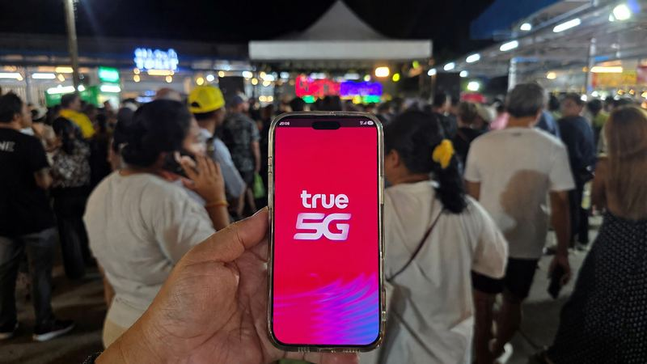
True rüstet 5G am Naka Market für Fanansturm auf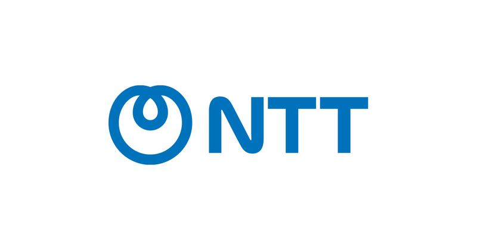
ITU-T standardisiert energieeffiziente Netze für KIAuch berichtet von Capacity Media
Auch berichtet von Mobile World Live
Auch berichtet von SoftBank
Auch berichtet von Light Reading, Fierce Network
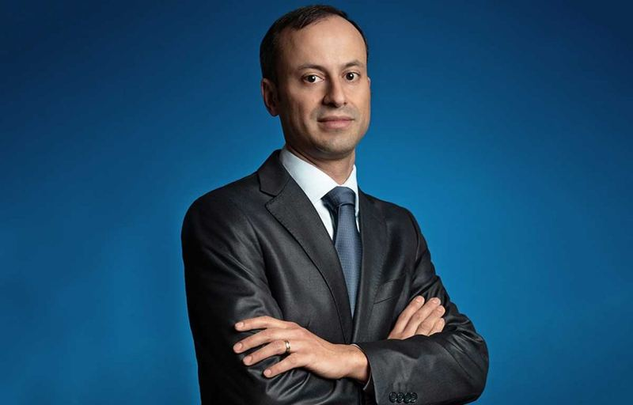
Intel senkt KI-Inferenzkosten ohne GPUs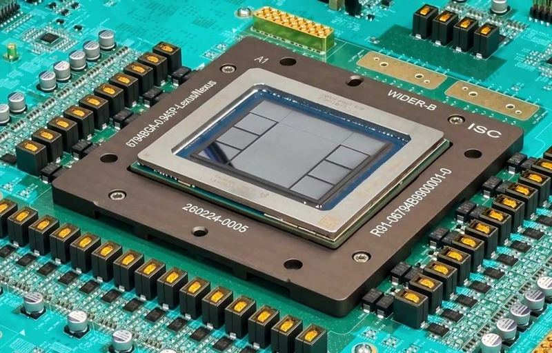
OpenAI-Chip erreicht bis zu 1,9-fache KI-EffizienzAuch berichtet von Mobile World Live, Telepolis (Polen)
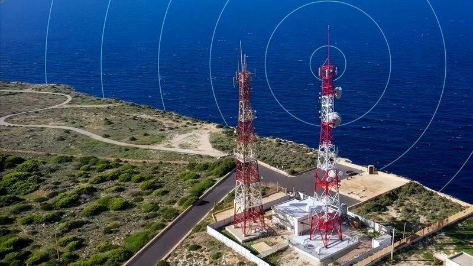
INWIT-Turm sichert Kommunikation auf Lampedusa
Tarife & Angebote
90 Meldungen
 Vodafone UK startet Pixel-11-Tarife ab 19,16 Pfund
Vodafone UK startet Pixel-11-Tarife ab 19,16 Pfund
 Orange Polska schenkt Wechslern bis zu sieben Monate
Orange Polska schenkt Wechslern bis zu sieben Monate
 Walutomat verkauft Reise-eSIM mit 1 GB für 1 Grosz
Walutomat verkauft Reise-eSIM mit 1 GB für 1 Grosz
 EE startet kommerzielles 5G-Netzwerk-Slicing als Fast Lane
EE startet kommerzielles 5G-Netzwerk-Slicing als Fast Lane
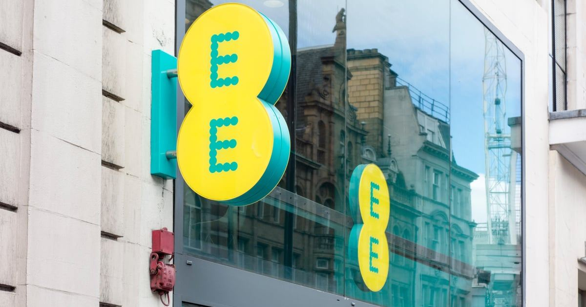
EE startet 5G-Slicing für Endkunden TIM bietet 30 Tage Gratis-Netztest per eSIM
TIM bietet 30 Tage Gratis-Netztest per eSIM
Auch berichtet von DPL News (Lateinamerika), Mobile Time (Brasilien), TeleSíntese (BR), TELETIME (Brasilien)
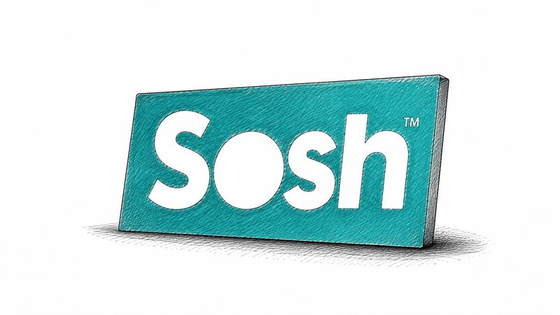
Sosh-Glasfaser fällt nach Tagen von 8 auf 5 Gb/s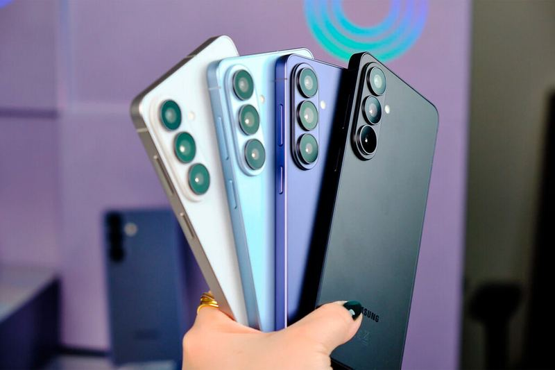
Samsung verkauft Galaxy S26 für 629 Euro Plus kombiniert Samsung-Trade-in mit Rabatt und Watch-Geschenk
Plus kombiniert Samsung-Trade-in mit Rabatt und Watch-Geschenk
Auch berichtet von Charter Communications, Light Reading
Auch berichtet von Univers Freebox
 Free bietet Games als Abo-Bonus an
Free bietet Games als Abo-Bonus an
Auch berichtet von Internet Initiative Japan
Auch berichtet von DPL News (Lateinamerika), TeleSíntese (BR), TELETIME (Brasilien)
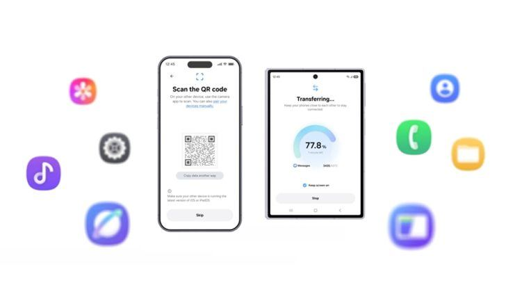
Samsung erleichtert Umstieg von iPhone auf Galaxy Z Fold8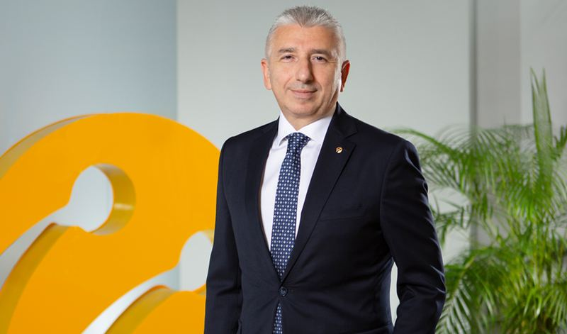
Turkcell erweitert Gratis-Roaming auf 15 Tage PremiumAuch berichtet von TelecomTalk
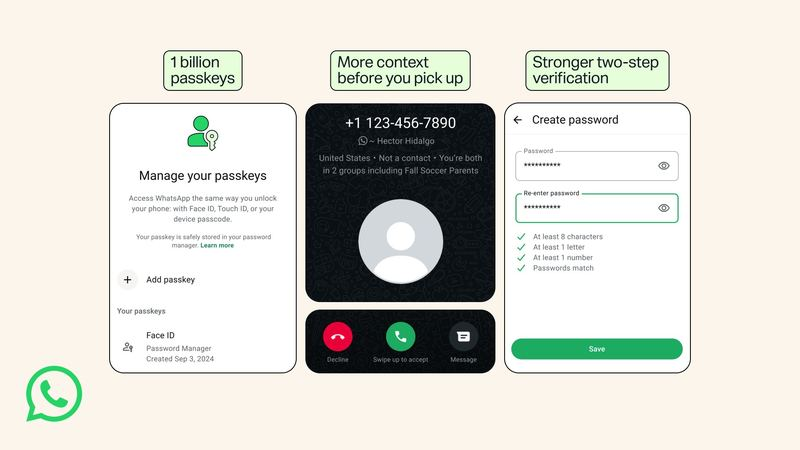
WhatsApp erhält stärkere Zwei-Faktor-AuthentifizierungAuch berichtet von Mobile World Live
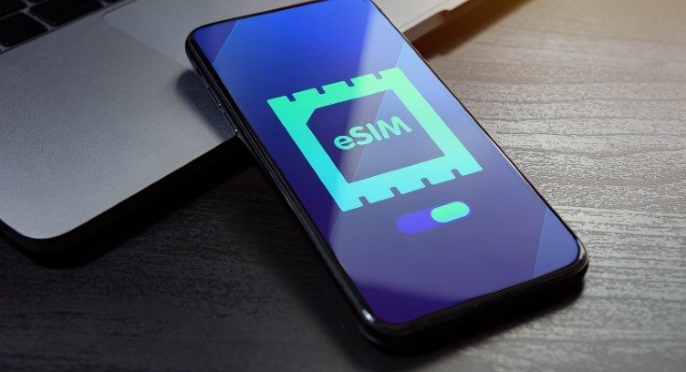
Kyivstar startet Reise-eSIM für 38 Länder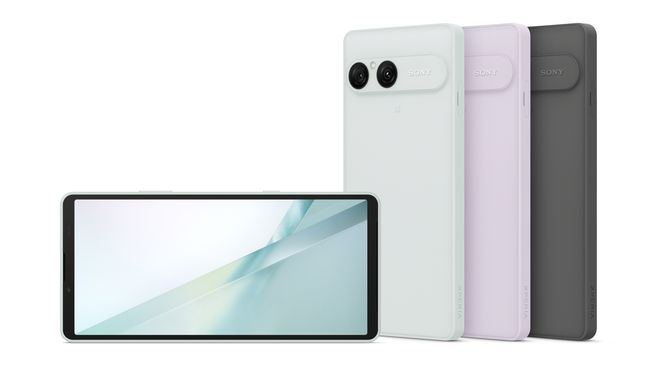
Sony zeigt Xperia 10 VIII und erhöht Preis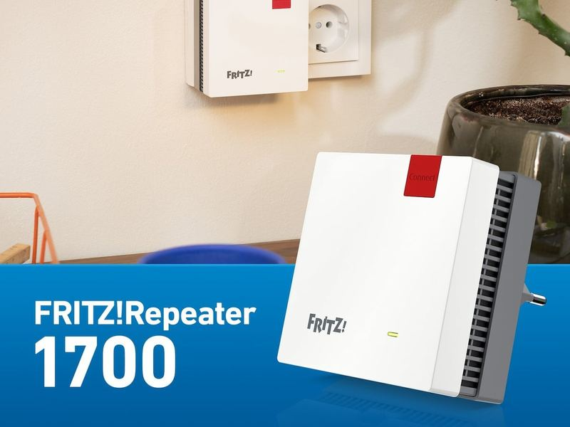
AVM bringt Wi-Fi-7-Repeater für Heimnetz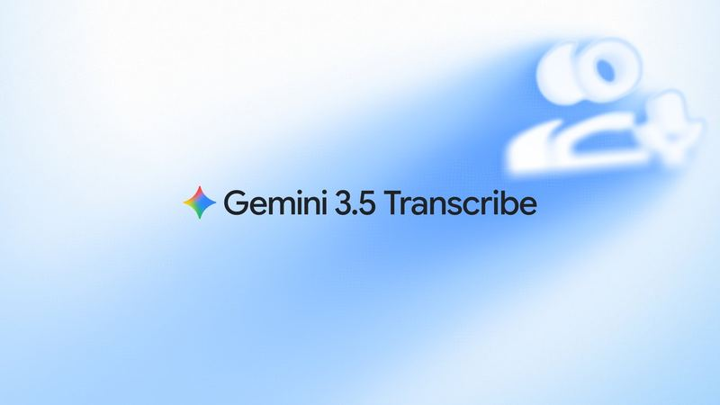
Google bringt intelligente Transkription mit Gemini 3.5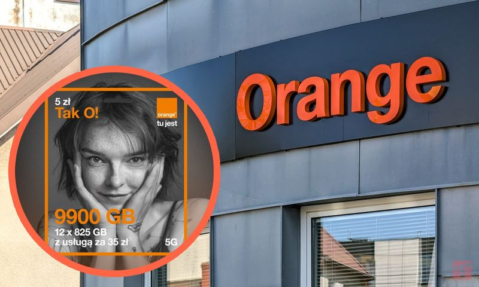
Orange Polen streicht Doppel-GB-Bonus ab 1. Oktober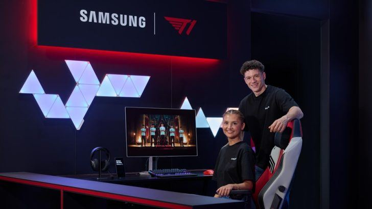
Samsung zeigt 6K-Gaming-Monitor und brillenloses 3D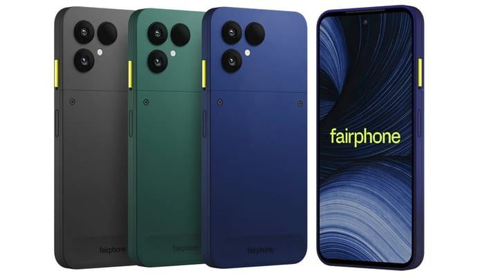
Fairphone startet Gen 6+ und USA-AbenteuerAuch berichtet von The Fast Mode
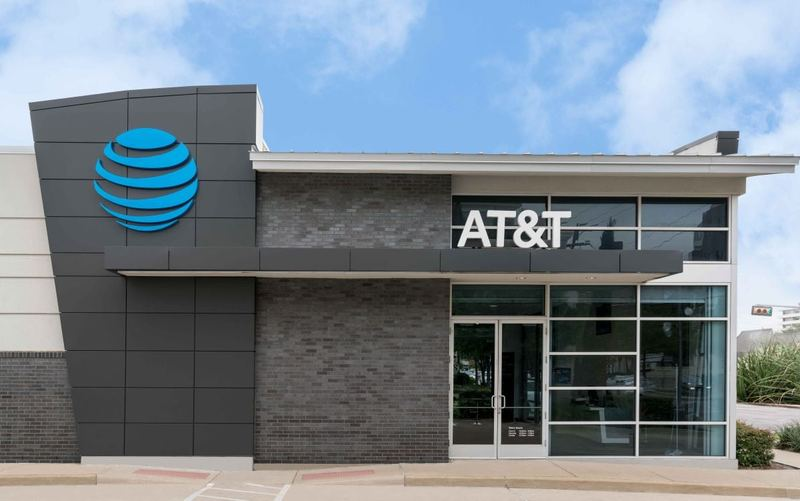
AT&T startet Cloud-Videodienst EdgeVis Mukuru startet Visa-Karte für Mobile-Wallet in Botswana
Mukuru startet Visa-Karte für Mobile-Wallet in Botswana
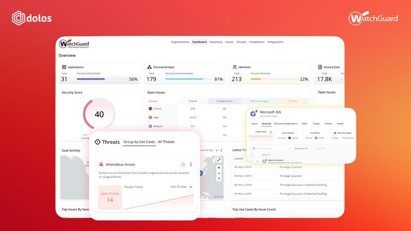
Dolos bringt WatchGuard CloudDR mit Gratis-Risikoanalyse nach Afrika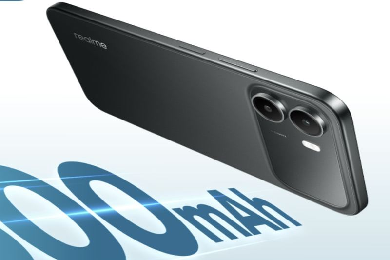
Realme startet Indien-Phone C100i für 14.999 RupienAuch berichtet von TelecomLead (Indien), TelecomTalk
 BCN startet Managed Service für automatische Remote-Netzreparatur
BCN startet Managed Service für automatische Remote-Netzreparatur
Satellit & Direct-to-Cell
18 Meldungen
 AT&T nennt 800-MHz-Test von AST SpaceMobile Meilenstein
AT&T nennt 800-MHz-Test von AST SpaceMobile Meilenstein
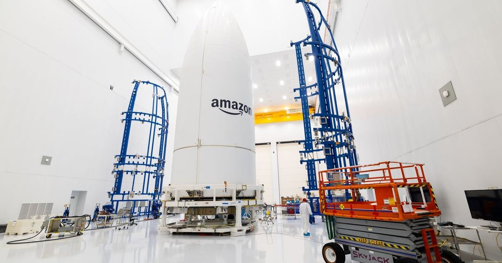
Amazon will Mobilfunk direkt aus 5000 Satelliten senden Satelliten-IoT wächst auf 198 Millionen Verbindungen
Satelliten-IoT wächst auf 198 Millionen Verbindungen
Regulierung & Politik
50 Meldungen
 USA erwägt neue Zölle auf Halbleiter-Produkte
USA erwägt neue Zölle auf Halbleiter-Produkte
Auch berichtet von Mobile Europe
Auch berichtet von Connecting Africa
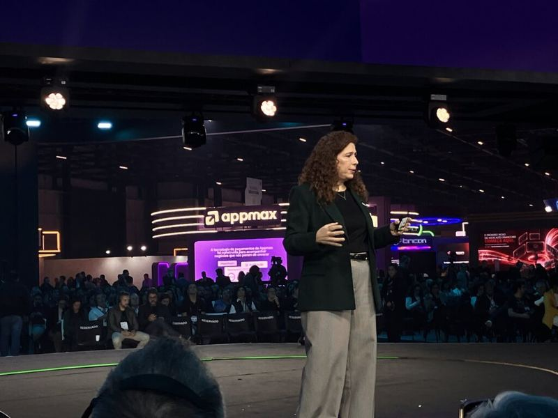
Brasilien will vier Millionen digitale Ausweise monatlichAuch berichtet von ČTÚ (Tschechien)
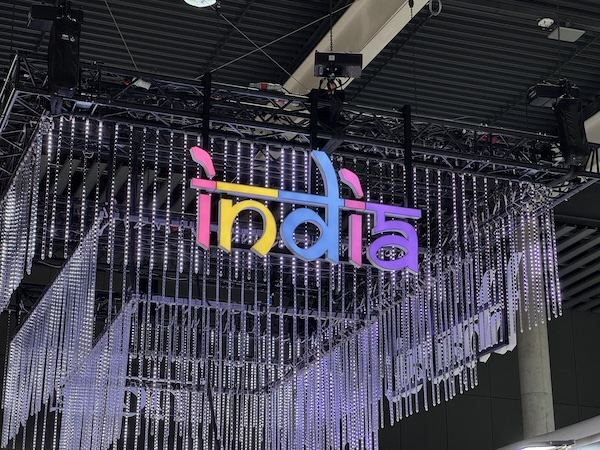
Indien kündigt lokal entwickelte Smartphones binnen 14 Monaten an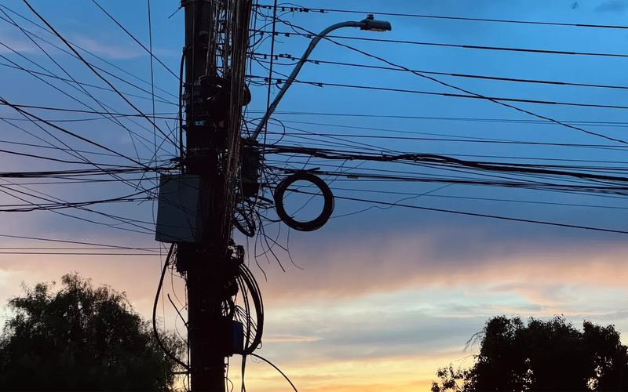
Urteil zu Mast-Kosten in Brasilien erneut verschobenAuch berichtet von TELETIME (Brasilien), TeleSíntese (BR)
Auch berichtet von TELETIME (Brasilien)
Geld & Übernahmen
34 Meldungen
Iliad Group · 2026-08-27
Iliad wächst und übernimmt Teile von SFR
Iliad meldet für H1 2026 ein organisches Service-Umsatzplus von 3,4 Prozent, einen Konzerngewinn von 502 Millionen Euro und hat mit Orange und Bouygues Telecom eine Übernahme von SFR-Teilen vereinbart; in Frankreich startete Free Max mit unbegrenztem Datenvolumen für Frankreich und 140 internationale Reiseziele.
Auch berichtet von Iliad
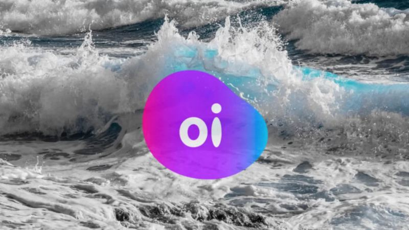
Regierung stellt sich auf Oi-Insolvenz einAuch berichtet von Developing Telecoms
Auch berichtet von Developing Telecoms
Auch berichtet von The Fast Mode, MTN Group
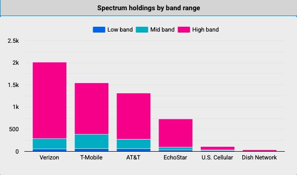
AT&T zahlt 23 Milliarden Dollar für EchoStar-SpektrumAuch berichtet von PolicyTracker
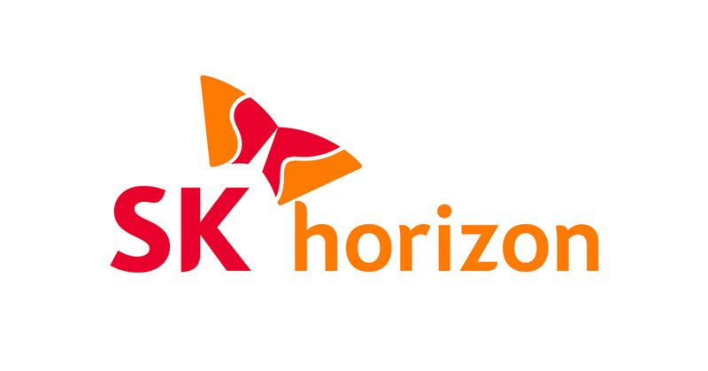
SK Telecom gründet KI-Rechenzentrumsfirma SK Horizon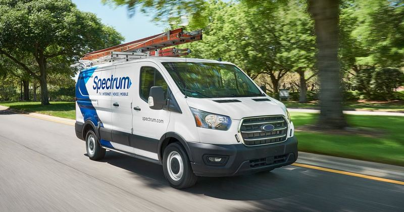
Charter und Cox komplett fusioniert, Spectrum-Marke startet Mitte SeptemberAuch berichtet von Light Reading
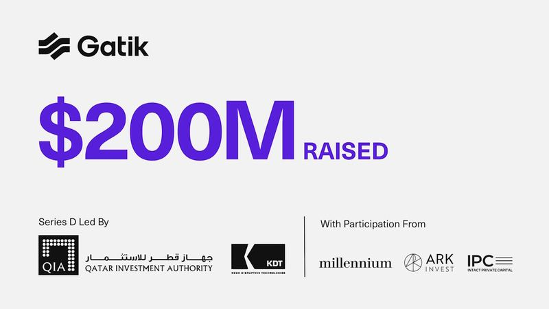
Autonomes Lkw-Startup Gatik erhält 200 Millionen Dollar Charlie Ergen übernimmt US-Mobilfunker MobileX
Charlie Ergen übernimmt US-Mobilfunker MobileX
Auch berichtet von Light Reading
Auch berichtet von Light Reading
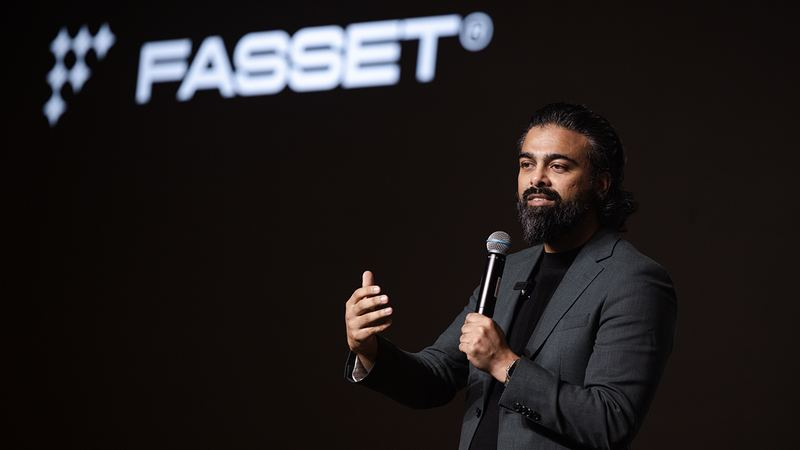
Fasset erreicht Milliardenbewertung mit 68 Millionen Dollar Gamma bestätigt Übernahmegespräche mit Waterland
Gamma bestätigt Übernahmegespräche mit Waterland
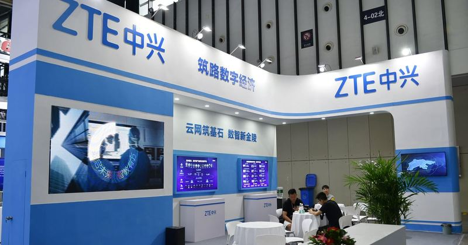
ZTE Netzwerkgeschäft schwächelt, Kosten steigen
Partnerschaften
32 Meldungen
Vodafone Idea · 2026-08-26
Vodafone Idea und BSNL teilen Netzinfrastruktur enger
Vodafone Idea und der staatliche indische Netzbetreiber BSNL haben laut CNBC Awaaz eine umfassendere Infrastrukturvereinbarung geschlossen. In Kreisen wie Delhi und Mumbai gibt es bereits Intra-Circle-Roaming; BSNL hatte Vodafone Idea bis April 2026 rund 1.441 Türme vermietet.
Auch berichtet von Developing Telecoms

 Breezeline buendelt DIRECTV mit Preisgarantie und Rabatt
Breezeline buendelt DIRECTV mit Preisgarantie und Rabatt
 Mistral und HUMAIN entwickeln arabische KI in Saudi-Arabien
Mistral und HUMAIN entwickeln arabische KI in Saudi-Arabien
Auch berichtet von Mistral AI, Developing Telecoms
Auch berichtet von Mobile Europe, Mobile World Live, Light Reading
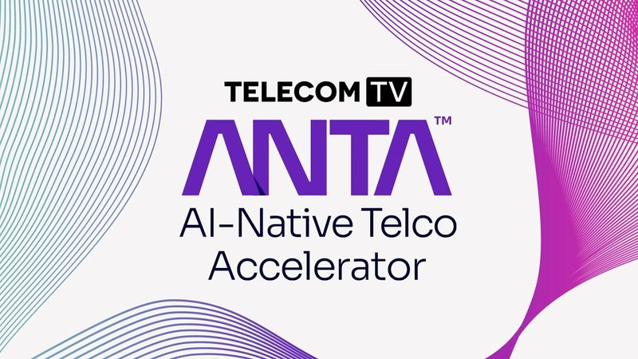
Vodafone tritt AI-Native Telco Accelerator beiAuch berichtet von Light Reading, Tata Communications
Auch berichtet von Light Reading
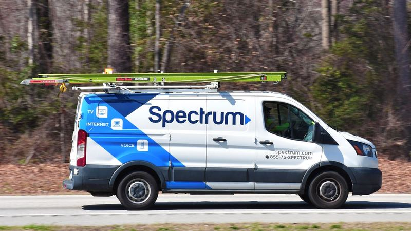
EU gibt Telefónica-Gigafactory-Joint-Venture grünes LichtAuch berichtet von Telefónica
Auch berichtet von NTT Group
Auch berichtet von Zayo
Vermischtes
52 Meldungen
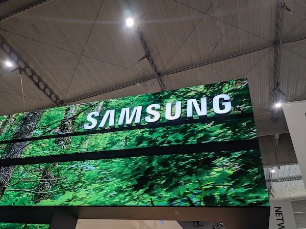
Smartphone-Auslieferungen Lateinamerika fallen wegen Speichermangel zehn Prozent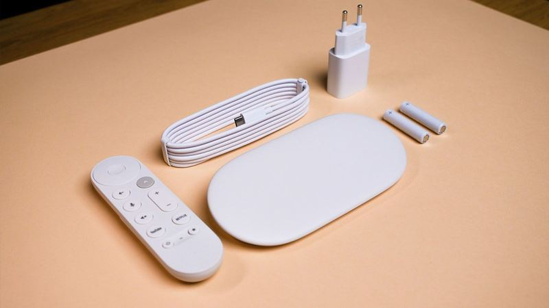
Google TV Streamer 4K für 85 Euro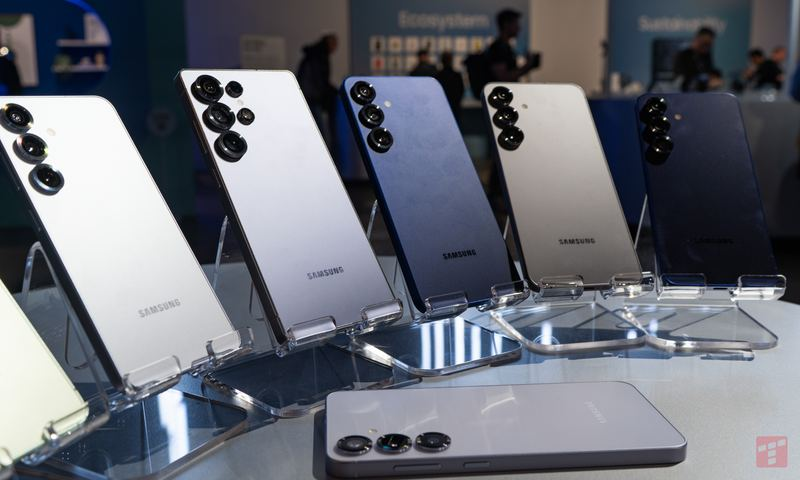
Samsung Galaxy S26 Ultra braucht Update statt Reparatur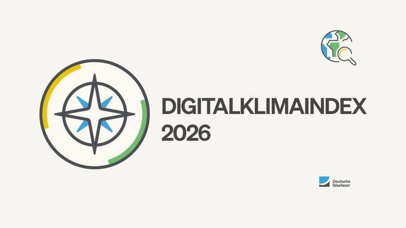
Digitalklimaindex: KI erhöht Erwartungen an berufliche DigitalisierungAuch berichtet von Bitkom
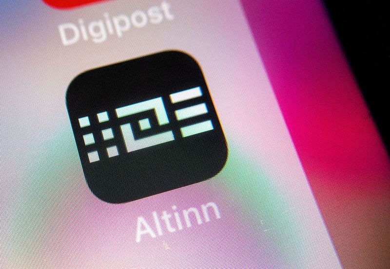
Dritter Überlastungsangriff legt norwegische Verwaltungsdienste lahm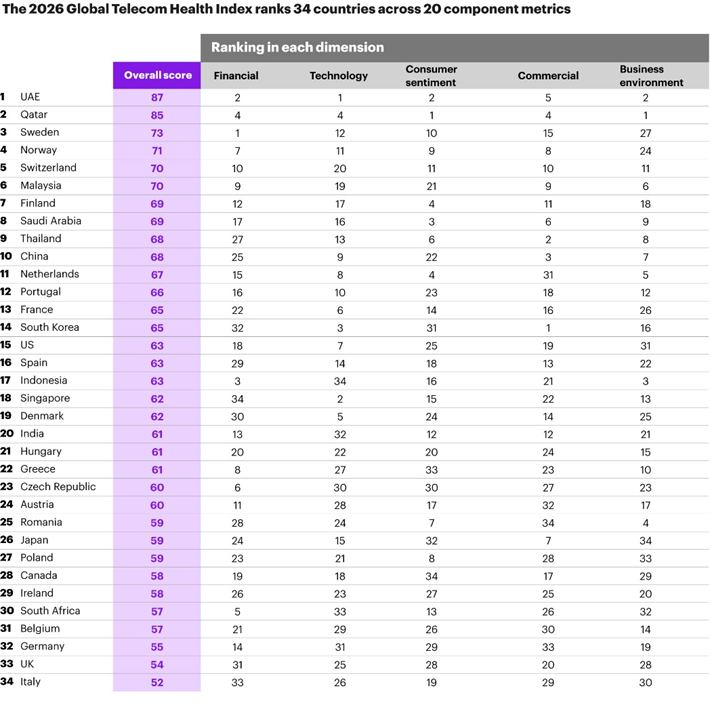
Vereinigte Arabische Emirate und Katar laut Studie vornAuch berichtet von Telefónica
 Anthropic mietet KI-Rechenleistung für 45 Milliarden Dollar
Anthropic mietet KI-Rechenleistung für 45 Milliarden Dollar
Frühere Ausgaben
27. August 2026
1046 neue Meldungen
26. August 2026
967 neue Meldungen
25. August 2026
866 neue Meldungen
21. August 2026
663 neue Meldungen
19. August 2026
926 neue Meldungen
17. August 2026
897 neue Meldungen
15. August 2026
810 neue Meldungen
14. August 2026
944 neue Meldungen
8. August 2026
256 neue Meldungen
7. August 2026
381 neue Meldungen
6. August 2026
642 neue Meldungen
5. August 2026
426 neue Meldungen
4. August 2026
124 neue Meldungen
31. Juli 2026
220 neue Meldungen
28. Juli 2026
9 neue Meldungen
27. Juli 2026
49 neue Meldungen
26. Juli 2026
4 neue Meldungen
25. Juli 2026
11 neue Meldungen
21. Juli 2026
185 neue Meldungen
20. Juli 2026
27 neue Meldungen
19. Juli 2026
233 neue Meldungen
17. Juli 2026
257 neue Meldungen
16. Juli 2026
1991 neue Meldungen